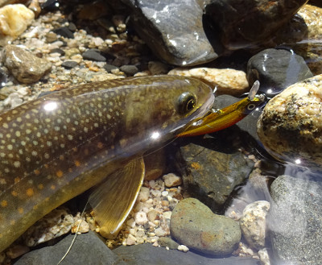
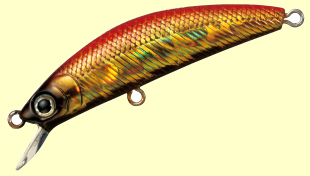

私のお気に入り
ルアー ダイワ ドクターミノー
釣行日誌 故郷編にも書いたが、私が２０１６年９月３日の源流釣行時に使用していたルアーは、ダイワ製の「ドクターミノー」というルアーである。大きさは50mm、タイプはF（フローティング）。色は赤金だった。おかげさまで何十年ぶりかの尺上イワナと 28cm級を２尾、このミノーで釣り上げることができた。

ラインナップとしては、サイズが50mmと70mm、タイプはフローティング、シンキングとファストシンキングとがある。色のバリエーションも豊富である。

このミノーの良い所は、
- なんと言っても価格が安い（メーカー希望本体価格 850円～950円：2016）
- 細かなバイブレーションで、リアルに良く泳ぎ、ロッドアクションへの応答性が良い
- トレブルフックの先端が鋭い
などの点である。
2009年頃まで、渓流ではスピナーかスプーンのどちらかしか使っていなかった僕が、良く釣る叔父を見習ってミノーを使い始めた時に、安さに惹かれて上州屋で買ったのがこのドクターミノーの黒赤だった。価格は650円ほどだったような気がする。１つ2000円もするミノーでは、当時も今も、キャストミスや根掛かりでなくすことが怖くておいそれとは使えない。また、下流に投げてから流れに逆らって早引きする時にも独特のアクションは損なわれない。まぁ40cmを越えるような湖の大物には、少々フックが弱いかと思われるが、渓流の30cm級には問題無いであろう。フローティングタイプでも、早く巻けば、１メートルくらいは潜らせることができる。さらにフローティングの利点としては、下流を向いて釣っている時に、流れに覆いかぶさった枝の下に浮かせたまま流し込んで、おもむろにリーリングを始めるという手段が取れることが挙げられる。ただし、沈み石の陰などをしつこく攻める際にはファストシンキングの方に分があると、叔父の釣りを見ていて思わされる。
色は、赤金、黒金、ヤマメ模様、蛍光黄色、バッタ模様など様々あるが、イワナ向けには赤金が当たると信じて使っている。何よりルアー自体の視認性が良いのが赤金の優れた点である。
ダイワ製なので、たいていの釣り具店で取り寄せが可能かと思われる。また、通販のアマゾンでも扱っている。願わくば、生産中止にならないことを祈る。
私のお気に入り 目次へ
サイトマップ
ホームへ
お問い合わせ